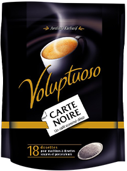
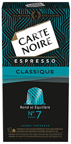

On vous raconte tout
Carte Noire fête ses 40 ans. 40 années marquées par la passion du café, 40 années durant lesquelles la marque n’a eu de cesse d’innover.
Faisant de la qualité son mot d’ordre, Carte Noire a toujours su anticiper et surtout répondre aux attentes des consommateurs en proposant une sélection de cafés de qualité, à la palette aromatique unique. Carte Noire est une marque ancrée dans le quotidien des Français, qui sait se renouveler pour satisfaire les passionnés du café.
Café moulu, en grains, soluble, dosettes souples, capsules espresso… Carte Noire étend progressivement son expertise pour devenir aujourd’hui la première marque de café multi-segments du marché*.
*Source « Nielsen ScanTrack P9 2018 ».Chez Carte Noire nous sommes des créateurs de café. Le café nous passionne, il nous inspire. Avec l’entrée au sein du Groupe Lavazza, Carte Noire est devenue plus qu’une marque, un vrai projet industriel et humain, avec une âme entrepreneuriale et une personnalité : un nouveau Carte Noire.Vincent Flouquet Directeur Général Carte Noire SAS
la révolution arabica
Carte Noire : Classique, impertinente, indémodableLa marque de café Carte Noire voit le jour en 1978. Son créateur, René Monnier, grand amateur de café, a fait le choix de redonner à l’arabica ses lettres de noblesse, avec audace et créativité. Refusant la dégradation de la qualité du café qui fait suite à une hausse des cours du café en 1976, il lance un produit différent : un café haut de gamme, pur arabica, vendu plus cher que la concurrence. Il va alors façonner le goût unique et intense de Carte Noire à base d’arabicas d’Amérique latine et notamment du Brésil.



**Nespresso® est une marque d’un tiers n’ayant aucun lien avec le groupe Luigi Lavazza S.p.A.
*** Nescafé® et Dolce Gusto® sont des marques d’un tiers n’ayant aucun lien avec le groupe Luigi Lavazza S.p.A.
une saga publicitaire
EnivranteCarte Noire a su créer une expérience de marque unique en imaginant au fil des années une saga publicitaire qui a marqué l’esprit des Français.
Cassant les codes habituels de la communication du café, Carte Noire a forgé des liens très forts avec l’univers du cinéma, à travers sa saga publicitaire.
Découvrir la saga
Créer, partager
À l’instar de la relation unique et de la connivence que la marque a su créer avec les Français, Carte Noire a décidé, à l’occasion de ses 40 ans d’aller plus loin. Ainsi, elle réserve à ses fidèles une surprise… leur permettant de se retrouver à Paris… à suivre au début de l’année prochaine…
Le goût unique, l’arôme intense, la qualité constante depuis plus de 40 ans, la saga publicitaire de Carte Noire, ont façonné un territoire de marque : les consommateurs sont autant attachés à la qualité du produit qu’ils le sont à leur marque.
accédez aux éléments du dossier de presse
Contact presse
Burson Cohn & Wolfe
Hélène Boyer
Une fabrication française
De qualitéDepuis 1969, le paquet de café géant Carte Noire, pilier de l’usine de Lavérune dans l’Hérault (34), est devenu le symbole du savoir-faire industriel de la marque. C’est dans ce territoire dynamique proche de Montpellier que l’usine fabrique et torréfie les cafés Carte Noire. Chaque année, 27 000 tonnes de café sont produites en utilisant des méthodes de haute précision technologique. Les experts Carte Noire goûtent et contrôlent la qualité de chaque lot de café, torréfient et conditionnent l’ensemble des produits. C’est cet ancrage qui donne aussi à Carte Noire son caractère unique, à la française.
Souhaitant perpétuer cette tradition et incarner plus que jamais l’essence d’un café Made in France, Lavazza a investi 23 millions d’euros pour moderniser et optimiser la capacité de production de l’usine depuis 2016. Ces investissements ont notamment permis l’installation d'une nouvelle ligne de dosettes souples au rendement élevé, ou encore l’optimisation d’une ligne existante de capsules compatibles Nespresso®*. Un nouveau torréfacteur tangentiel à la technologie innovante a été installé, permettant la torréfaction de différents cafés verts et répondant ainsi aux différentes exigences des consommateurs.
Grâce à son expertise en matière de torréfaction, d’assemblage et de mouture, les équipes Carte Noire transforment le café vert (principalement de l’arabica du Brésil, Honduras et Colombie) en cafés aux arômes, saveurs et niveaux d’intensité distincts pour satisfaire tous les goûts, pour tous les moments de consommation.
Aujourd’hui l’usine de Lavérune compte 9 lignes de production et 9 appareils de torréfaction et concentre toutes les activités de production Carte Noire.
*Nespresso®est une marque d’un tiers n’ayant aucun lien avec le groupe Luigi Lavazza S.p.A.Une gamme de café
Bio et DurableCarte Noire, et l’ensemble de ses collaborateurs sont convaincus que la création d’un avenir meilleur pour les générations futures ne sera possible qu’à travers des activités durables et des produits de haute qualité. L’entreprise souhaite ainsi contribuer à la création d’un modèle qui réconcilie les intérêts des producteurs de café et ceux des consommateurs, tout en mettant en avant l’innovation.
En 2017, Carte Noire a fait ses premiers pas dans l’univers du bio pour satisfaire les amateurs de café en quête d’alimentation saine, en commercialisant trois références. Et depuis septembre 2018, la gamme s’est étendue à l’ensemble des segments. Dorénavant Carte Noire est la seule marque de café à proposer une gamme bio complète.
Carte Noire est la première marque à proposer aux consommateurs des références BIO sur tous les segments du café (café moulu, café en grains, café soluble, dosettes souples, capsules compatibles Nespresso®**, capsules compatibles Nescafé® Dolce Gusto®***)
Avec cette gamme, Carte Noire fait le choix d’une démarche responsable. La sélection des grains respecte les normes de l’Union Européenne sur l’agriculture biologique, certifiées par le logo « Eurofeuille » et la marque s’engage aussi à s'approvisionner pour cette gamme en grains verts ayant obtenu les normes de durabilité certifiées par le label UTZ.
**Nespresso® est une marque d’un tiers n’ayant aucun lien avec le groupe Luigi Lavazza S.p.A.
*** Nescafé® et Dolce Gusto® sont des marques d’un tiers n’ayant aucun lien avec le groupe Luigi Lavazza S.p.A.
des passionnés
Du caféDans un univers professionnel en mutation, Carte Noire, une entreprise à taille humaine, a su créer un environnement de travail au sein duquel ses collaborateurs se sentent bien, leur permettant ainsi d’exprimer leurs talents et leur personnalité.
Carte Noire compte actuellement 350 collaborateurs répartis entre deux entités autonomes : un site de production à Lavérune et le siège à Boulogne-Billancourt, dans les Hauts-de-Seine (92). Car, au-delà des produits, Carte Noire est devenue une entreprise à part entière depuis son entrée au sein du Groupe Lavazza en mars 2016. A travers sa signature d’entreprise, forte et engageante, « Carte Noire, Revealing colorful people », Carte Noire valorise à la fois l’état d’esprit unique et ouvert de l’entreprise mais aussi la diversité des profils recherchés.
Elle incite ses collaborateurs, présents et futurs, à laisser libre cours à leur créativité pour positionner Carte Noire comme un acteur majeur dans l’univers des biens de grande consommation.
la révolution arabica
Carte Noire : Classique, impertinente, indémodableLa marque de café Carte Noire voit le jour en 1978. Son créateur, René Monnier, grand amateur de café, a fait le choix de redonner à l’arabica ses lettres de noblesse, avec audace et créativité. Refusant la dégradation de la qualité du café qui fait suite à une hausse des cours du café en 1976, il lance un produit différent : un café haut de gamme, pur arabica, vendu plus cher que la concurrence.
Il va alors façonner le goût unique et intense de Carte Noire à base d’arabicas d’Amérique latine et notamment du Brésil.
En visionnaire, il innove en matière de packaging : le café Carte Noire se vend dans un emballage sous vide souple. D’un point de vue marketing, il adopte les codes traditionnels du luxe et du parfum à la française : avec ses couleurs noir, blanc et or.
Il y fera inscrire “Premier grand cru, pur arabica”, ce qui renforce la notion de très haute qualité.
Pour garantir sa fraîcheur le paquet, totalement hermétique, bénéficie d’une valve d’où le gaz naturel produit après la torréfaction peut s’échapper. Les lauriers triomphaux soulignent encore aujourd’hui l’originalité fondatrice de cette innovation et le savoir-faire français.
Carte Noire, c’est aussi un procédé de torréfaction unique, à la précision horlogère, qui associe différents modes de torréfaction, à la fois rapide et lente, à des niveaux de température et d’humidité variables. Un véritable tourbillon d’air chaud précipite les grains de cafés torréfiés à froid, garantissant une fixation naturelle des arômes.
Depuis 40 ans, Carte Noire propose des cafés de qualité en se renouvelant sans cesse et en plaçant l’innovation au cœur de la stratégie de l’entreprise. Pionnier du segment 100 % arabica à la fin des années 70, Carte Noire a toujours eu à cœur d’offrir la meilleure qualité café sur le marché français, quel que soit la façon de préparer son café : en grains, en torréfié, en dosettes souples, en capsules compatibles.
C’est cette exigence qui pousse la marque à toujours repenser son offre : des recettes retravaillées avec l’expertise de la R&D Lavazza Groupe, pour atteindre une qualité café exceptionnelle à chaque instant.
Carte Noire propose plus de 50 produits différents pour répondre à toutes les attentes et modes de préparation et 800 principes aromatiques sont présents dans ses cafés avec une constance en goût quel que soit le dosage.
Une saga publicitaire
EnivranteCarte Noire a su créer une expérience de marque unique en imaginant au fil des années une saga publicitaire qui a marqué l’esprit des Français. Cassant les codes habituels de la communication du café, Carte Noire a forgé des liens très forts avec l’univers du cinéma, à travers sa saga publicitaire. Chaque film a été imaginé comme un court moment de cinéma, la marque faisant souvent appel à des réalisateurs de renom (Jalil Lespert, Valérie Donzelli) ainsi qu’à de célèbres actrices à l’instar de Rossy De Palma en 2017. Partenaire officiel du Festival de Cannes en 1993 et 1994, la marque a aussi parrainé plusieurs prix cinématographiques et est le partenaire de tous les moments cinéma de Canal +. Les spots sont centrés sur l’imagination, le rêve et la sensualité tout en restant au service du produit, de l’arôme intense, de la qualité unique.
Le cinéma, comme le café, a une dimension d’intensité. A chaque tasse, pour chaque film, c’est la découverte, l’intensité des émotions, la surprise. L’exigence de la qualité et le souci du détail sont des valeurs communes aux deux univers.
Du premier spot TV de 1983, déjà inspiré d’un film d’Hitchcock, aux dernières campagnes, la marque exprime son potentiel émotionnel avec une puissance cinématographique conférant des dimensions presque magiques au produit.
Un café nommé Désir
Le slogan historique fait référence au livre de Tennessee William « Un tramway nommé désir » ainsi qu’à sa célèbre adaptation cinématographique par Elia Kazan et une chanson iconique d’Harry Balafonte “Try to remember”.
En 2016, Carte Noire dévoile une nouvelle signature : Les plus belles couleurs du noir qui prend tout son sens dans une campagne TV rupturiste, « Nouvelle Collection Expresso », qui ouvre une nouvelle page dans l’histoire de Carte Noire. Une nouvelle saga, qui bouscule les codes traditionnels de la marque, ayant pour objectif d’emmener Carte Noire vers plus de modernité.
Dans la lignée de « Nouvelle Collection Espresso », la marque poursuit son incursion décalée dans l’univers de la mode. Qui de plus légitime que Jalil Lespert, réalisateur passionné par l’univers de la mode, pour mettre en images la nouvelle saga Carte Noire ? Dès son arrivée sur le projet, Jalil Lespert a tout de suite manifesté son envie de travailler avec Rossy de Palma, icône du 7e art et modeuse extravertie. Entre le réalisateur et l’actrice, l’alchimie a tout de suite fonctionné. Leurs deux personnalités complémentaires ont permis de détourner les codes de la mode avec humour pour continuer de creuser le sillon du nouveau territoire d’expression de Carte Noire : un univers mode en pleine effervescence, où le « moment café » est un incontournable.
En 2018, la marque met en avant la variété de son offre, multi-segments, à travers des films courts, colorés, recentrés sur les produits. Ils valorisent la sensorialité produit, le savoir-faire français et la qualité du café Carte Noire.Et demain les prochaines campagnes Carte Noire intégreront plus de sensorialité à travers des moments de dégustation sublimés, une narrative tournée autour du plaisir et de la convivialité tout en assumant son savoir-faire français.
Carte Noire a souhaité en 2016 saisir l’opportunité du relancement de ses capsules compatibles Nespresso pour se réinventer en communication, sur un marché du café qui s’est beaucoup transformé ces dernières années. Pour annoncer de façon évènementielle l’arrivée de sa nouvelle Collection Espresso, au design coloré, nous avons détourné avec humour les codes de la mode : les fashionistas amoureux du café s’arrachent cette nouvelle collection dès son arrivée en magasins. Nous voulions montrer la modernité de la marque mais surtout toute la passion de Carte Noire pour la qualité café. C’est le sens de la plateforme de marque « Les plus belles couleurs du noir ». Carte Noire révèle toutes les richesses du café, révèle les plus belles couleurs du noir.Anne-Isabelle Cerles Directrice Générale BETC
L’Aéroport
L’Aéroport (2006) avec Olga Kurylenko et Andres Segura, met en scène un couple qui tournoie dans les airs, à l’instar de l’arôme du café qui se dégage de leurs deux tasses, restées sur le comptoir du bar de l’aéroport. La sensorialité est au cœur de la publicité de Carte Noire.
Nouvelle Collection Expresso
Une campagne TV déclinée en 3 formats (1min, 30s et 20s), où la marque joue avec humour sur les codes de la mode, pour mettre en avant la désirabilité du produit. Réalisé par Ivan Gbovic, le film principal met en scène des fashionistas prêts à tout pour obtenir les nouvelles capsules espresso Carte Noire.
Fashionista
En 2017, la marque poursuit son incursion décalée dans l’univers de la mode. Qui de plus légitime que Jalil Lespert, réalisateur passionné par l’univers de la mode, pour mettre en images la nouvelle saga Carte Noire ? Dès son arrivée sur le projet, Jalil Lespert a tout de suite manifesté son envie de travailler avec Rossy de Palma, icône du 7e art et modeuse extravertie pour continuer de creuser le sillon du nouveau territoire d’expression de Carte Noire : un univers mode en pleine effervescence, où le « moment café » est un incontournable.